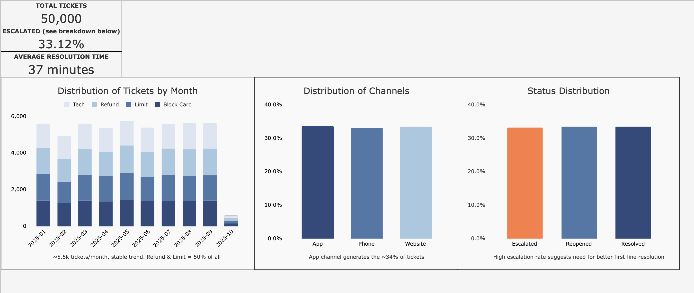
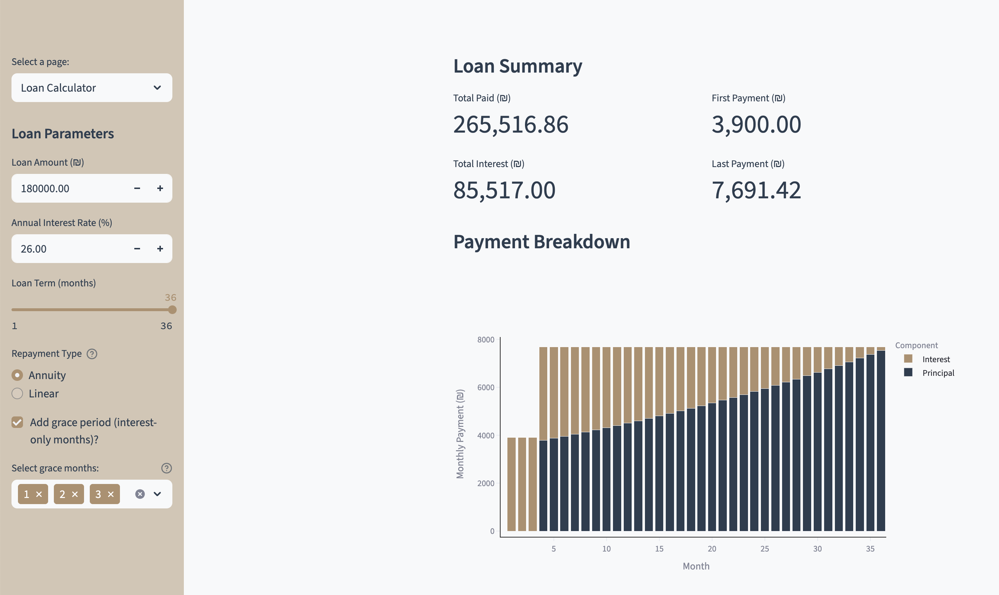
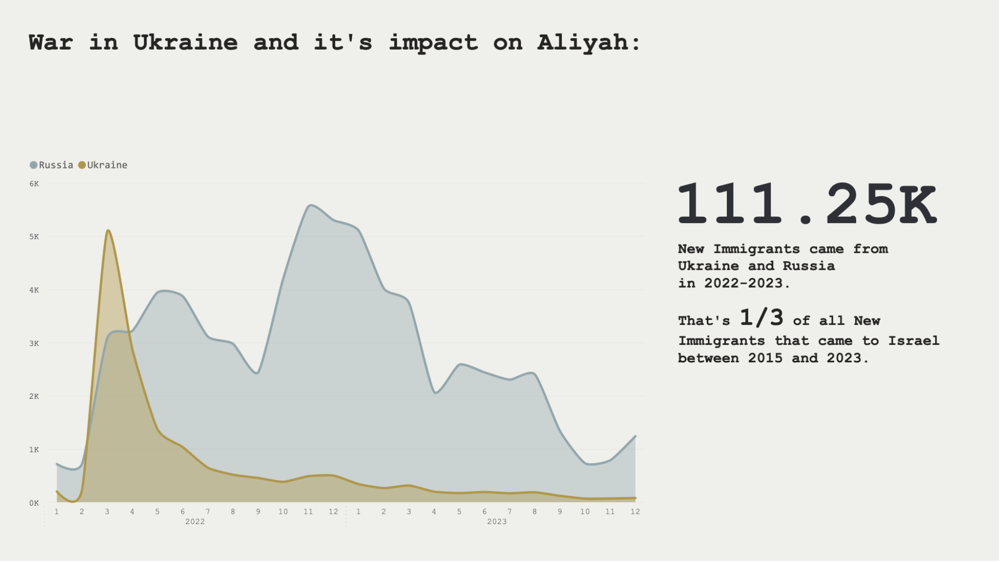

Programming Languages
Python
HTML5
CSS
Data Analyst | MA in Information Technology
With a background in history, I bring strong analytical thinking, cultural awareness, and problem-solving capabilities to data-focused roles. My service in the IDF further developed my skills in time management, collaboration, and leadership. Currently, I am pursuing an M.A. in Information Technology at Bar-Ilan University, while working at Isracard as a Customer Success Operator. I’m proficient in SQL, Python, Power BI, and Excel, and committed to continuous learning. I am eager to transition into a data analyst role and build meaningful connections across the data community.

Python
HTML5
CSS
Pandas
Matplotlib
NumPy
Seaborn
Streamlit
Telegram API
VS Code
PyCharm
Git (GitHub)
Trello
PostgreSQL
BigQuery
SQLite
MS Excel
dbt
Docker
Power BI
Tableau
Hebrew
English
Russian
Ukrainian

• Generated synthetic support dataset via Python to simulate one year of tickets • Built Excel dashboard with pivot tables, KPIs, and conditional formatting • Visualized ticket volumes, issue types, and resolution trends for clear insights

• Developed an interactive loan amortization visualizer using Streamlit and Plotly, enabling dynamic comparison of annuity and linear repayment schedules over time • Engineered a robust data pipeline using Pandas to load, clean, and compare user-uploaded amortization schedules

• Created a unified table with SQL, translating most text from Hebrew (excluding professions) to streamline the process.
• Developed Power BI visualizations for effective data presentation, exporting the new table to a separate CSV file.